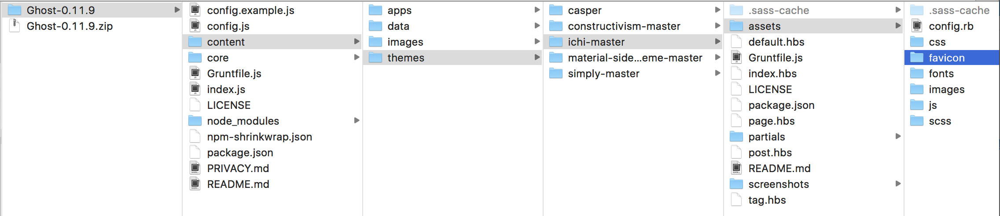

發現同時開很多 Ghost Blog 製作的頁面在閱讀時，就很難一時間判斷哪個是自己的 XD，所以Google了一下要怎樣換掉瀏覽器分頁上面的小圖示，原來它叫做Favicon
參考來源
Change or add a favicon to a ghost blog (browser tab icon)
概要
基本上就是幾個步驟
先做好自己的 icon ... 這應該沒什麼好猶豫的 XD 但參考來源推薦了一個網站很不錯：realfavicongenerator.net。隨著現在瀏覽器在大大小小螢幕設定越來越多，也要出各式大小的icon去配合，這個網站一次完成，還附上 code 讓你 copy & past 直接使用！
在 Theme 中的 assets 中建立一個 favicon 資料夾，把做好的icon們全丟進去
修改一下 default.hbs，從：
<link rel="shortcut icon" href="{{asset "favicon.ico"}}">
變成
<link rel="apple-touch-icon" sizes="180x180" href="{{asset "/favicon/apple-touch-icon.png"}}">
<link rel="icon" type="image/png" sizes="32x32" href="{{asset "/favicon/favicon-32x32.png"}}">
<link rel="icon" type="image/png" sizes="16x16" href="{{asset "/favicon/favicon-16x16.png"}}">
<link rel="manifest" href="{{asset "/favicon/manifest.json"}}">
<link rel="mask-icon" href="{{asset "/favicon/safari-pinned-tab.svg"}}" color="#5bbad5">
<link rel="shortcut icon" href="{{asset "/favicon/favicon.ico"}}">
<meta name="msapplication-config" content="{{asset "/favicon/browserconfig.xml"}}">
<meta name="theme-color" content="#ffffff">
然後重新啟動 ghost blog 就大功告成啦！